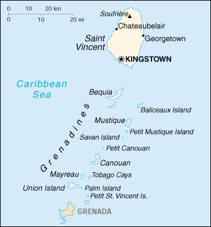

{kind=link}


| Saint Vincent and the Grenadines |
|
|  | |
| Introduction |
Background: Disputed between France and Great Britain in the 18th century, Saint Vincent was ceded to the latter in 1783. Autonomy was granted in 1969, and independence in 1979.
| Geography |
Location: Caribbean, islands in the Caribbean Sea, north of Trinidad and Tobago
Geographic coordinates: 13 15 N, 61 12 W
Map references: Central America and the Caribbean
Area:
total:
389 sq km (Saint Vincent 344 sq km)
land:
389 sq km
water:
0 sq km
Area - comparative: twice the size of Washington, DC
Land boundaries: 0 km
Coastline: 84 km
Maritime claims:
contiguous zone:
24 nm
continental shelf:
200 nm
exclusive economic zone:
200 nm
territorial sea:
12 nm
Climate: tropical; little seasonal temperature variation; rainy season (May to November)
Terrain: volcanic, mountainous
Elevation extremes:
lowest point:
Caribbean Sea 0 m
highest point:
Soufriere 1,234 m
Natural resources: hydropower, cropland
Land use:
arable land:
10%
permanent crops:
18%
permanent pastures:
5%
forests and woodland:
36%
other:
31% (1993 est.)
Irrigated land: 10 sq km (1993 est.)
Natural hazards: hurricanes; Soufriere volcano on the island of Saint Vincent is a constant threat
Environment - current issues: pollution of coastal waters and shorelines from discharges by pleasure yachts and other effluents; in some areas, pollution is severe enough to make swimming prohibitive
Environment - international agreements:
party to:
Biodiversity, Climate Change, Desertification, Endangered Species, Environmental Modification, Hazardous Wastes, Law of the Sea, Ozone Layer Protection, Ship Pollution, Whaling
signed, but not ratified:
Climate Change-Kyoto Protocol
Geography - note: the administration of the islands of the Grenadines group is divided between Saint Vincent and the Grenadines and Grenada
| People |
Population: 115,461 (July 2000 est.)
Age structure:
0-14 years:
30% (male 17,868; female 17,263)
15-64 years:
63% (male 37,377; female 35,623)
65 years and over:
7% (male 3,144; female 4,186) (2000 est.)
Population growth rate: 0.43% (2000 est.)
Birth rate: 18.25 births/1,000 population (2000 est.)
Death rate: 6.21 deaths/1,000 population (2000 est.)
Net migration rate: -7.75 migrant(s)/1,000 population (2000 est.)
Sex ratio:
at birth:
1.03 male(s)/female
under 15 years:
1.04 male(s)/female
15-64 years:
1.05 male(s)/female
65 years and over:
0.75 male(s)/female
total population:
1.02 male(s)/female (2000 est.)
Infant mortality rate: 17.06 deaths/1,000 live births (2000 est.)
Life expectancy at birth:
total population:
72.3 years
male:
70.6 years
female:
74.06 years (2000 est.)
Total fertility rate: 2.11 children born/woman (2000 est.)
Nationality:
noun:
Saint Vincentian(s) or Vincentian(s)
adjective:
Saint Vincentian or Vincentian
Ethnic groups: black 66%, mixed 19%, East Indian 6%, Carib Amerindian 2%
Religions: Anglican 47%, Methodist 28%, Roman Catholic 13%, Seventh-Day Adventist, Hindu, other Protestant
Languages: English, French patois
Literacy:
definition:
age 15 and over has ever attended school
total population:
96%
male:
96%
female:
96% (1970 est.)
| Government |
Country name:
conventional long form:
none
conventional short form:
Saint Vincent and the Grenadines
Data code: VC
Government type: parliamentary democracy; independent sovereign state within the Commonwealth
Capital: Kingstown
Administrative divisions: 6 parishes; Charlotte, Grenadines, Saint Andrew, Saint David, Saint George, Saint Patrick
Independence: 27 October 1979 (from UK)
National holiday: Independence Day, 27 October (1979)
Constitution: 27 October 1979
Legal system: based on English common law
Suffrage: 18 years of age; universal
Executive branch:
chief of state:
Queen ELIZABETH II (since 6 February 1952), represented by Governor General Sir Charles ANTROBUS (since NA)
head of government:
Prime Minister James F. MITCHELL (since 30 July 1984)
cabinet:
Cabinet appointed by the governor general on the advice of the prime minister
elections:
none; the monarch is hereditary; the governor general is appointed by the monarch; following legislative elections, the leader of the majority party is usually appointed prime minister by the governor general; deputy prime minister appointed by the governor general on the advice of the prime minister
Legislative branch:
unicameral House of Assembly (21 seats, 15 elected representatives and 6 appointed senators; representatives are elected by popular vote from single-member constituencies to serve five-year terms)
elections:
last held 15 June 1998 (next to be held by NA May 2003)
election results:
percent of vote by party - NA; seats by party - NDP 8, ULP 7
Judicial branch: Eastern Caribbean Supreme Court (based on Saint Lucia), one judge of the Supreme Court resides in Saint Vincent
Political parties and leaders: National Reform Party or NRP [Joel MIGUEL]; New Democratic Party or NDP [James F. MITCHELL]; Progressive Labor Party or PLP [leader NA]; United People's Movement or UPM [Adrian SAUNDERS]; Unity Labor Party or ULP [Ralph GONSALVES] (formed by the coalition of Saint Vincent Labor Party or SVLP and the Movement for National Unity or MNU)
International organization participation: ACP, C, Caricom, CDB, ECLAC, FAO, G-77, IBRD, ICAO, ICFTU, ICRM, IDA, IFAD, IFRCS, ILO, IMF, IMO, Intelsat (nonsignatory user), Interpol, IOC, ITU, OAS, OECS, OPANAL, OPCW, UN, UNCTAD, UNESCO, UNIDO, UPU, WCL, WFTU, WHO, WIPO, WTrO
Diplomatic representation in the US:
chief of mission:
Ambassador Kingsley C. A. LAYNE
chancery:
3216 New Mexico Avenue NW, Washington, DC 20016
telephone:
[1] (202) 364-6730
FAX:
[1] (202) 364-6736
Diplomatic representation from the US: the US does not have an embassy in Saint Vincent and the Grenadines; the US Ambassador in Barbados is accredited to Saint Vincent and the Grenadines
Flag description: three vertical bands of blue (hoist side), gold (double width), and green; the gold band bears three green diamonds arranged in a V pattern
| Economy |
Economy - overview: Agriculture, dominated by banana production, is the most important sector of this lower-middle-income economy. The services sector, based mostly on a growing tourist industry, is also important. The government has been relatively unsuccessful at introducing new industries, and a high unemployment rate of 22% continues. The continuing dependence on a single crop represents the biggest obstacle to the islands' development; tropical storms wiped out substantial portions of crops in both 1994 and 1995. The tourism sector has considerable potential for development over the next decade. Recent growth has been stimulated by strong activity in the construction sector and an improvement in tourism. There is a small manufacturing sector and a small offshore financial sector whose particularly restrictive secrecy laws have caused some international concern.
GDP: purchasing power parity - $309 million (1999 est.)
GDP - real growth rate: 4% (1999 est.)
GDP - per capita: purchasing power parity - $2,600 (1999 est.)
GDP - composition by sector:
agriculture:
10.6%
industry:
17.5%
services:
71.9% (1996 est.)
Population below poverty line: NA%
Household income or consumption by percentage share:
lowest 10%:
NA%
highest 10%:
NA%
Inflation rate (consumer prices): 2% (1999 est.)
Labor force: 67,000 (1984 est.)
Labor force - by occupation: agriculture 26%, industry 17%, services 57% (1980 est.)
Unemployment rate: 22% (1997 est.)
Budget:
revenues:
$85.7 million
expenditures:
$98.6 million, including capital expenditures of $25.7 million (1997 est.)
Industries: food processing, cement, furniture, clothing, starch
Industrial production growth rate: -0.9% (1997 est.)
Electricity - production: 64 million kWh (1998)
Electricity - production by source:
fossil fuel:
67.19%
hydro:
32.81%
nuclear:
0%
other:
0% (1998)
Electricity - consumption: 60 million kWh (1998)
Electricity - exports: 0 kWh (1998)
Electricity - imports: 0 kWh (1998)
Agriculture - products: bananas, coconuts, sweet potatoes, spices; small numbers of cattle, sheep, pigs, goats; fish
Exports: $47.8 million (1998 est.)
Exports - commodities: bananas 39%, eddoes and dasheen (taro), arrowroot starch, tennis racquets
Exports - partners: Caricom countries 49%, UK 16%, US 10% (1995)
Imports: $180 million (1998 est.)
Imports - commodities: foodstuffs, machinery and equipment, chemicals and fertilizers, minerals and fuels
Imports - partners: US 36%, Caricom countries 28%, UK 13% (1995)
Debt - external: $83.6 million (1997)
Economic aid - recipient: $47.5 million (1995); note - EU $34.5 million (1998)
Currency: 1 East Caribbean dollar (EC$) = 100 cents
Exchange rates: East Caribbean dollars (EC$) per US$1 - 2.7000 (fixed rate since 1976)
Fiscal year: calendar year
| Communications |
Telephones - main lines in use: 20,500 (1998)
Telephones - mobile cellular: 83 (1993)
Telephone system:
domestic:
islandwide, fully automatic telephone system; VHF/UHF radiotelephone from Saint Vincent to the other islands of the Grenadines
international:
VHF/UHF radiotelephone from Saint Vincent to Barbados; new SHF radiotelephone to Grenada and to Saint Lucia; access to Intelsat earth station in Martinique through Saint Lucia
Radio broadcast stations: AM 1, FM 3, shortwave 0 (1998)
Radios: 77,000 (1997)
Television broadcast stations: 1 (plus three repeaters) (1997)
Televisions: 18,000 (1997)
Internet Service Providers (ISPs): NA
| Transportation |
Railways: 0 km
Highways:
total:
1,040 km
paved:
320 km
unpaved:
720 km (1996 est.)
Ports and harbors: Kingstown
Merchant marine:
total:
825 ships (1,000 GRT or over) totaling 7,253,092 GRT/10,894,566 DWT
ships by type:
barge carrier 1, bulk 142, cargo 400, chemical tanker 31, combination bulk 10, combination ore/oil 5, container 47, liquified gas 5, livestock carrier 5, multi-functional large load carrier 3, passenger 3, petroleum tanker 60, refrigerated cargo 41, roll-on/roll-off 51, short-sea passenger 12, specialized tanker 8, vehicle carrier 1 (1999 est.)
note:
a flag of convenience registry; includes ships from 20 countries among which are Croatia 17, Slovenia 7, China 5, Greece 5, UAE 3, Norway 2, Japan 2, and Ukraine 2 (1998 est.)
Airports: 6 (1999 est.)
Airports - with paved runways:
total:
5
914 to 1,523 m:
3
under 914 m:
2 (1999 est.)
Airports - with unpaved runways:
total:
1
under 914 m:
1 (1999 est.)
| Military |
Military branches: Royal Saint Vincent and the Grenadines Police Force (includes Special Service Unit), Coast Guard
Military expenditures - dollar figure: $NA
Military expenditures - percent of GDP: NA%
| Transnational Issues |
Disputes - international: none
Illicit drugs: transshipment point for South American drugs destined for the US and Europe